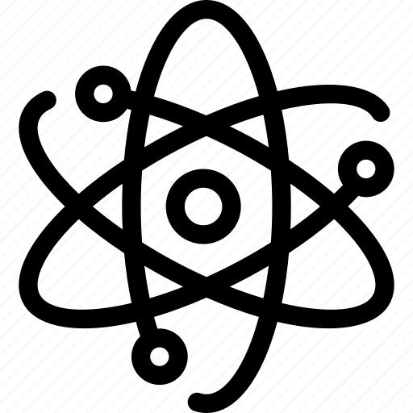

Badger with RFID contact
One software to manage them all

Pointeuse à badge RFID
Badger est une application qui vous aide à avoir une bonne gestion des employés dans une entreprise, connaitre les heures de pointage de chaque employé avec un historique et un retour dans le temps illimité. Qu'il s'agissent des absences, des heures supplémentaires ou des congés, tout a été pensé pour une gestion et une organisation optimales. et cela avec une interface intuitive et facile d'utilisation qui vous assure une expérience utilisateur très agréable.
Badger a commencé en tant que projet parallèle en 2021. Je participais à la création d'une application de bureau en Java pour un projet PFC dans mon université, Ce fut le début d'un autre nouveau projet avec deux de mes amis automaticiens. Depuis lors, nous avons collaboré sur quelques projets, mais Badger est toujours resté notre projet le plus important et le plus passionnant à ce jour.
"L'une des rares applications de gestion dont l'utilisation ne nessissite aucun cassement de tête, elle fait exactement ce que vous voulez qu'elle fasse."
Par un utilisateur satisfait


Technologies Used
-
 JavaScript
JavaScript
-
 VueJs
VueJs
-
 VuetifyJS
VuetifyJS
-
 NodeJS
NodeJS
-
 ElectronJS